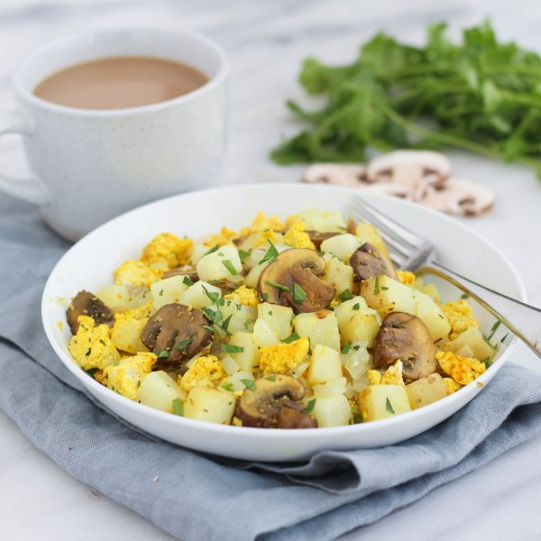

Savory Mushroom & Potato Tofu Scramble

Nutrition (per serving)
390.6 kcalCalories
22.1 gProtein
28.6 gCarbs
24 gFat
Full nutrition table
| Calories | 390.6 kcal |
| Total fat | 24 g |
| Saturated fat | 2.9 g |
| Trans fat | 0 g |
| Cholesterol | 0 mg |
| Sodium | 43.7 mg |
| Carbohydrates | 28.6 g |
| Fiber | 4.9 g |
| Sugars | 5.3 g |
| Protein | 22.1 g |
| Potassium | 1248.7 mg |
| Calcium | 346.5 mg |
| Iron | 5.2 mg |
| Vitamin A | 10.6 IU |
| Vitamin C | 22.6 mg |
| Vitamin D | 3.4 IU |
Cookware
Ingredients
- 1 lbcremini mushrooms
- 2 (12 oz) pkgextra firm tofu
- ½ small bunchItalian (flat-leaf) parsley
- 1 mediumyellow onion
- 2 mediumyellow potatoes
- black pepper
- extra virgin olive oil
- paprika
- salt
- thyme, dried
- turmeric, ground
Steps
- Cut the tofu in half along the long side. Sandwich the tofu between clean towels or paper towels and place on a baking sheet. Place a cutting board with something heavy on top and set aside to press out excess water.2 (12 oz) pkg extra firm tofu
- Wash and dry the fresh produce.2 medium yellow potatoes
1 lb cremini mushrooms
½ small bunch Italian (flat-leaf) parsley - Small dice the potatoes (cut into ¼-inch cubes). Transfer to a medium saucepan and cover with hot water (from the tap). Bring to a boil; reduce heat and simmer, covered, for 9 minutes. Once finished, drain the potatoes and set aside.
- Preheat a large skillet over medium heat.
- Peel and small dice onion.1 medium yellow onion
- Once the skillet is hot, add oil and swirl to coat the bottom.¼ cup extra virgin olive oil
- Add the onion to the skillet; cook, stirring frequently, until slightly softened, 3-4 minutes.
- Slice the mushrooms and add to the skillet along with spices.½ tsp thyme
½ tsp paprika
½ tsp turmeric
½ tsp salt
¼ tsp black pepper - Crumble the tofu with your fingers into the skillet. Add the cooked potatoes and stir to combine. Sauté until the mushrooms are softened, 5-7 minutes.
- Shave parsley leaves off the stems; discard the stems and mince the leaves.
- Divide the potatoes and veggies between plates and top with minced parsley. Enjoy!